Creating an EMF 1.1 Model using a Graphical Editor
In the previous tutorials, we showed you how to create EMF
models by importing Rose models or annotated Java interfaces. This
may have seemed like a somewhat indirect way of creating a model in
EMF. In this tutorial, we will show you how to create the Library
model from scratch using a graphical editor that manipulates the
EMF model directly. An EMF model file has the extension
.ecore and therefore sometimes referred to as
an ecore model.
The graphical editor is provided by Omondo through their EclipseUML plugin.
The following is the class diagram of the Library model we dealt
with in the first tutorial shown in Omondo graphics and
icons.
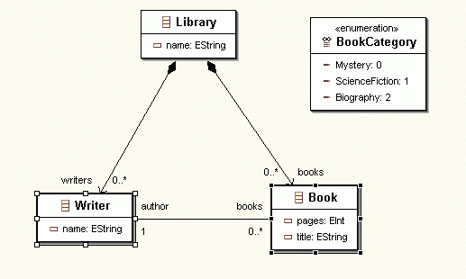
The screenshots in this tutorial were captured using version 2.1
of the Eclipse SDK, version 1.1.0 (build 20030519_0521VL) of EMF,
version 2.1.0 of GEF, and version 1.2.1 of EclipseUML.
Contents
contents
Step 0: Prerequisites
Download and install the latest EclipseUML plugin from the
Omondo web site (http://www.omondo.com/)
and its dependent plugins. The screenshots below were captured when
version 1.2.1 was available, but you should use the latest version
you find on the Omondo web site.
- Download the Auto-Installer and save the jar file in, say,
c:\temp.
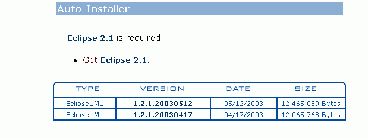
(If you already have the GEF and EMF plugins, you might want to
download the zip file which is smaller, but make sure you have the
correct versions of the dependencies.)
- Execute the jar file you downloaded:
C:\> cd c:\temp
C:\temp> java -jar eclipseuml-installer_1.2.1.ar
- Follow the instructions as the installer runs to install the
EclipseUML, GEF, and EMF plugins into your Eclipse
installation.
- Launch Eclipse. If you have run Eclipse before installing
EclipseUML, you will be prompted to run the Update Manager. Select
Yes and follow through the steps to install
EclipseUML.
Select Help>About Eclipse Platform.
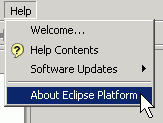
- Click the Plug-in Details button.
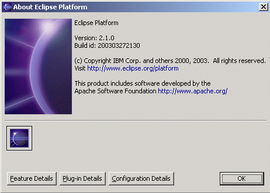
- Verify that the following highlighted plugins show up in the
dialog.
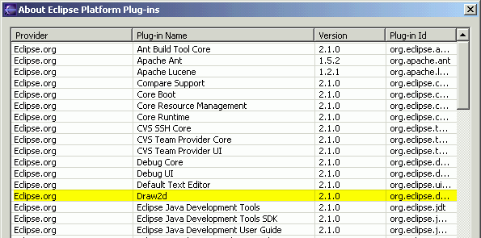
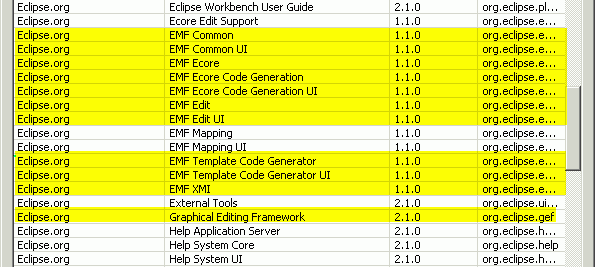
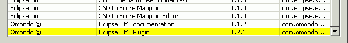
contents
Step 1: Creating a New Model
We first create a Java project and then use the wizard to create
a new EMF model.
- In the Navigator view in the Resource perspective, right-click
on the blank area and select New >
Project...:
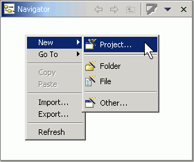
- Select "Java" and "Java Project". Click the "Next"
button.
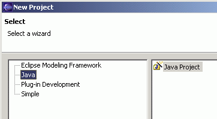
- Enter library as the project name. Click
the Finish button.
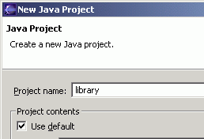
- Click the "Add Folder" button.
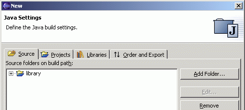
- Click the "Create New Folder" button.
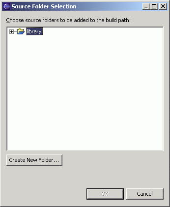
- Type "src" and click the "OK" button.
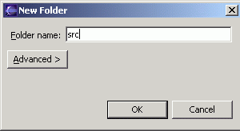
- Click the "OK" button.
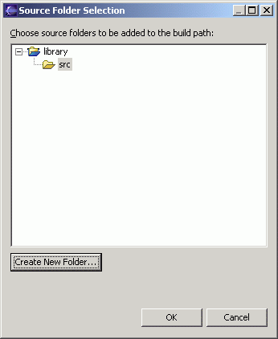
- When asked if you want to remove the project as source folder
and update the build output folder to "library/bin", click the
"Yes" button.
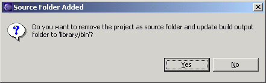
- Specify "library/runtime" as the build default output folder.
Click the "Finish" button.
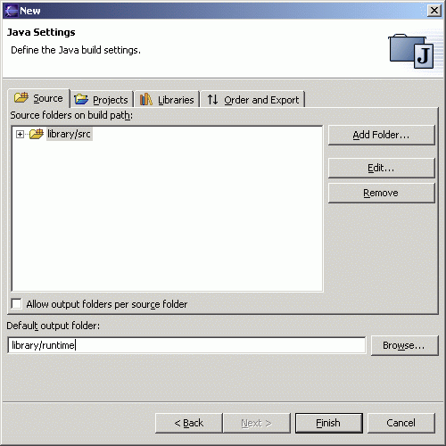
- The newly created Java project can be seen in the Package
Explorer.
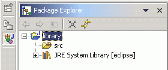
- On the Navigator view, right-click on the src
folder and select New > Folder.
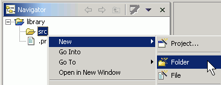
- Enter model as the folder name. Click the
Finish button.
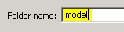
- With the model folder selected, select
File > New > Other....
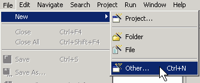
- Select EMF Diagrams on the left pane and
EMF Class Diagram on the right. Click the
Next button.
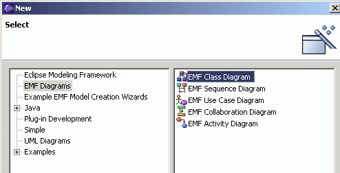
- Change the file name to library.ecd and
the package name to
org.ecilpse.example.library. You can also add
some description if your like. Click the
Finish button.
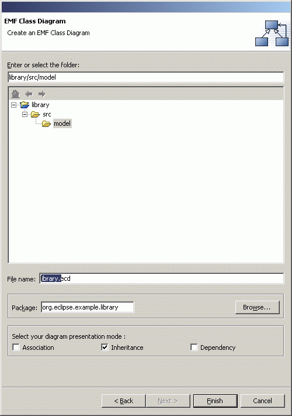
- A pair of files, the .ecore and the
.ecd files, will be created and the graphical editor
will be opened in the main view.
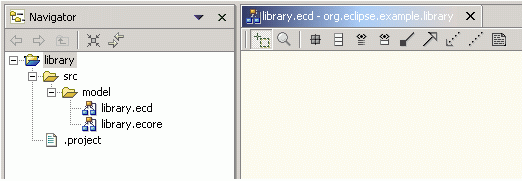
The .ecore file contains the
structure of the model while the .ecd file contains
the graphical layout information.
contents
Step 2: Creating Classes
- In the editor view, click on the Create a
class button, and then click anywhere in the blank
area. A New Class dialog will come up.
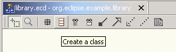
- Enter Library as the class name. Click
the Finish button.
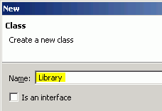
- A Library class will be drawn in the main view. You can
drag it around and place it wherever you prefer.
Now, right-click on it and select New >
Attribute.
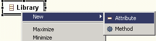
- Enter name as the name of the attribute.
Ensure that the other properties match what is shown below. Click
the OK button.
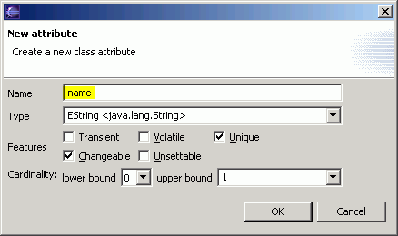
- You have just created a class named Library with
a String attribute named name.
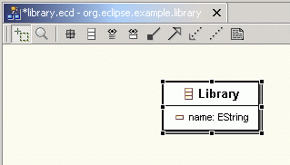
- There is also another way of creating classes. First, you click
in the blank area of the editor to deselect any class you might
have selected. Then, right-click in the blank area of the main view
and select New > Class.
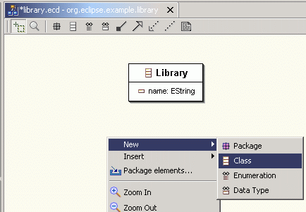
- Enter Writer as the class name and click
the Finish button.
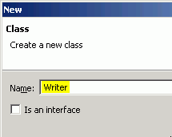
- Create the name attribute for the
Writer class just like before. Right-click on
Writer, select New >
Attribute, then enter name for
Name and click the OK button.
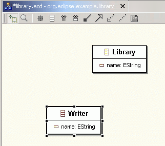
- Now we are going to create an enumeration class. You can click
on the 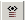
button and then anywhere on the blank area, or right-click on the
blank area and select New > Enumeration to
bring up the New Enumeration dialog. Enter
BookCategory as the name of the
enumeration.
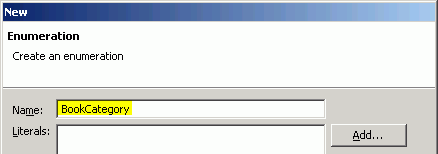
- For each of the three literals shown below, click on the
Add... button, enter the name and value of
the literals, and then click the OK
button.
Name
|
Value
|
Mystery
|
0
|
ScienceFiction
|
1
|
Biography
|
2
|
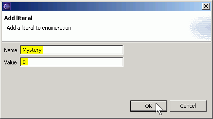
- At this point, the New Enumeration dialog should appear as
shown below. Click the Finish button.
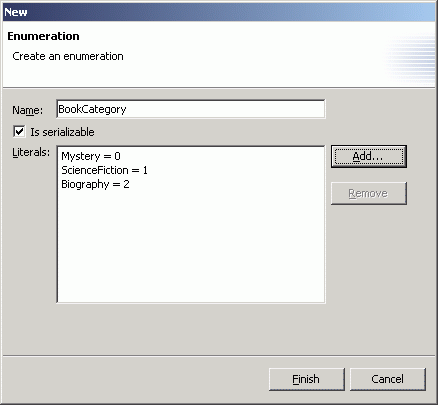
- The BookCategory enumeration is created and
shown in the editor.
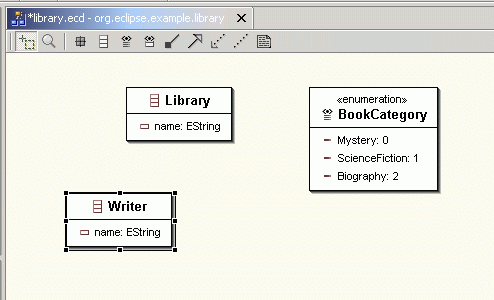
- We are now going to create the Book class.
Right-click on the blank area and select New >
Class. Enter Book as the class
name and click the Finish button. Then, with
the Book class selected, right-click and select New >
Attribute, enter title as the
attribute name and click the OK button.
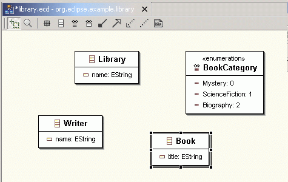
- With the Book class selected, right-click and select
New > Attribute, and enter
pages as the attribute name. Select
EInt as the type and click the
OK button.
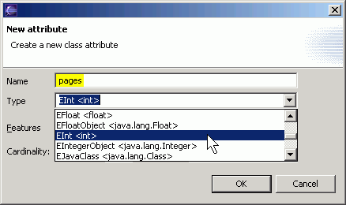
- With the Book class selected, right-click and select
New > Attribute, and enter
category as the attribute name. Select
BookCategory as the type and click the
OK button.
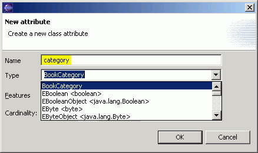
- Now you should have created 4 classes in the library
project.
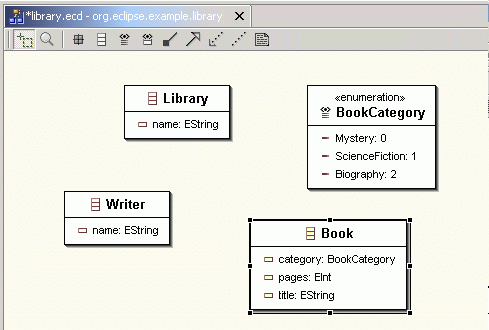
- Save the model by selecting File >
Save or simply press the Ctrl+S
key.
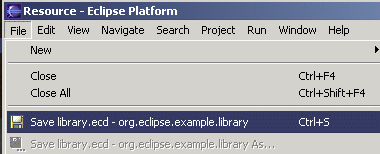
contents
Step 3: Creating Associations
- In the editor view, click on the
Association button .
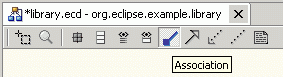
- Note that as you move your mouse pointer over a class, the
class will change color. Click on the Library
class.
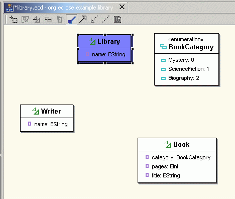
- Next, move the mouse pointer over to the
Writer class and click on it.
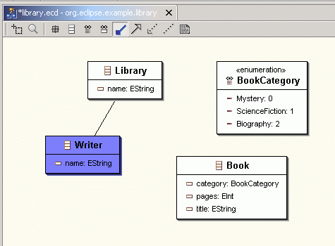
- As soon as you release the mouse button, the association
properties dialog comes up.
On the 1st Association End tab, change the
name to writers, select the
Containment checkbox, and change the upper
bound to -1.
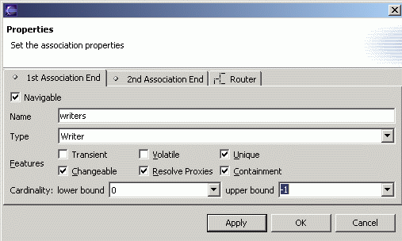
The Containment property indicates that a
Library object will contain Writer
objects through this writers association. The upper
bound of -1 means a Library
object can own more than one Writer objet.
- Click on the 2nd Association End tab, and
deselect the Navigable checkbox.
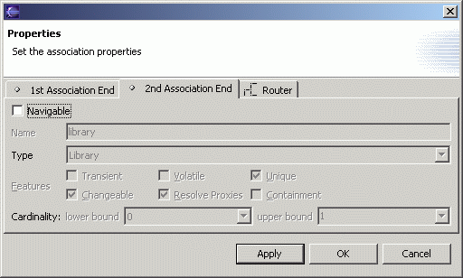
This indicates that from a Writer object, you cannot
navigate to the Library object that owns it.
- Click on the Router tab, select the
Manual radio button. The selections on this
tab do not affect the properties of the association in the ecore
model. They only affect how the association line is drawn in the
editor. Click the OK button.
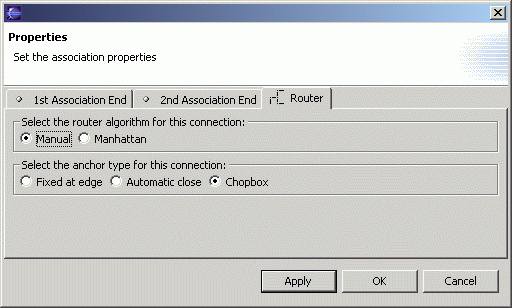
- An arrow is now drawn between the Library class
and the Writer class. to represent the association
we just created
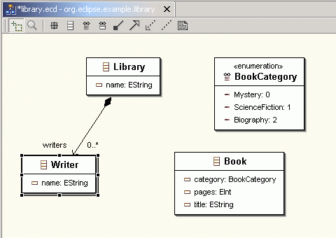
- Now, we are going to create the containment association between
Library and Book. It is similar to
the association between Library and
Writer.
Click on the button and then on the Library
class. Then click on the Book class. On the
1st Association End tab of the association
properties dialog, change the name to books,
select the Containment checkbox and change
the upper bound to -1.
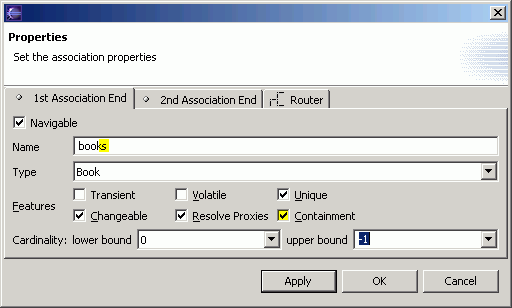
- On the 2nd Association End tab, deselect
the Navigable checkbox. On the
Router tab, select the
Manual radio button. Click the
OK button.
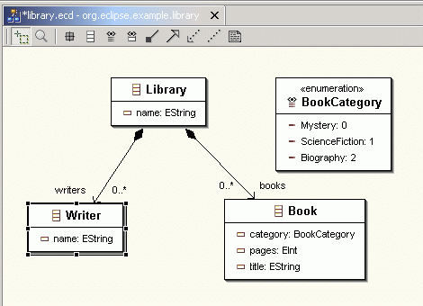
- Next we are going to create the association between
Book and Writer.
Click on the Association button , then click on the
Book class and then click on the
Writer class.
- On the 1st Association End tab, change
the name to author. Leave the
Containment checkbox unchecked, and change
the lower bound to 1.
We assume a book will have exactly one author.
- Click on the 2nd Association End tab.
Change the name to books and change the
upper bound to -1. A
writer can author zero or more books.
- Click on the Router tab, select the
Manual radio button and click the
OK button. The association is drawn in the
editor view.
- We can make the class diagram look tidier if we can make the
line that represents the association between the
Writer and Book classes be drawn so
that it appears horizontal and without the jagged edge. This can be
done easily in the editor.
Click on the Writer class to select it. Next,
holding down the Shift key, click on the Book
class to add it to the selection.
- Right-click and select Alignment > Align
Middle.
- Now, the diagram looks much neater. Press
Ctrl+S key to save the model.

contents
Step 4: Generating the Model and Editor
- In the editor view, right-click on the blank area. Select
Generate All.
- The first time you do code generation on a project, you will
need to create the GenModel model. The GenModel model is auxiliary
to the EMF model. It contains information about code generation
like the directory into which the code is generated and the adapter
pattern.
The GenModel selector will come up. Click on the New
GenModel button.
- Expand the library project and select the
model folder. Change the file name to
library.genmodel. Click the
Finish button.
- You are back in the GenModel selector. Click the
OK button and code generation begins.
- When the code generation is finished, the GenModel and the EMF
model code for the library project will have been
generated. In addition, the library.edit and
library.editor projects will have been generated and
be ready to execute.
- Switch to a Java perspective or a Debug perspective and then
follow Step 4 in the tutorial "Generating an
EMF Model" to run the generated editor.
contents
Step 5: Modifying the Model
When you modify the EMF model in the graphical editor, it will
sychronize the changes with the corresponding GenModel model.
- Working in the Resource perspective, double-click on the
library.genmodel in the Navigator view to
open it so that both the EMF model and GenModel model are shown. If
you have closed the EMF model, double-click on the
library.ecore file or the
library.ecd file in the Navigator view to
open the EMF model.
- Go to the EMF model view, select the Book
class, right-click and select New >
Attribute to add a new attribute. Enter
isbn as the name and click the
OK button.
- You can see that the EMF model and the GenModel model are not
synchronized. The newly added attribute isbn
is not in the GenModel model.
- To synchronize, save the EMF model by selecting File
> Save or simply pressing the
Ctrl+S key.
- The change still does not show up in the GenModel model yet.
You have to switch the GenModel model view into focus. It will then
be reloaded. When you expand to the Book class in
the GenModel model again, you will find the new attribute.
contents